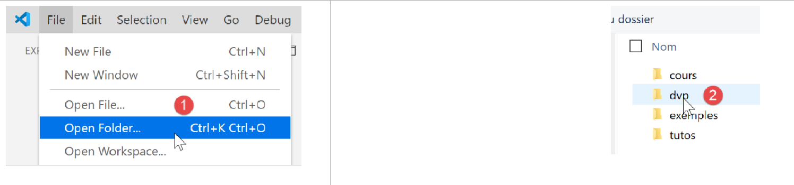
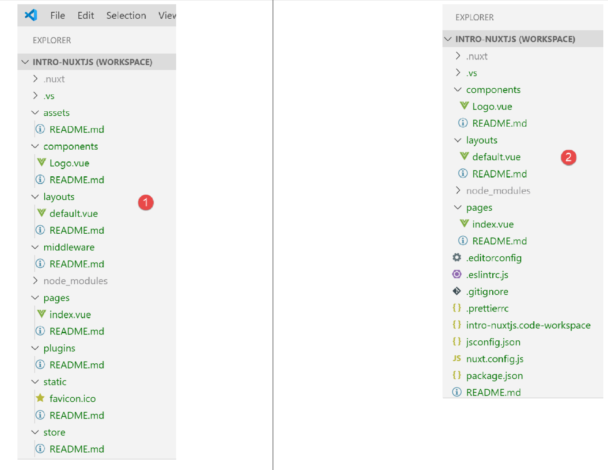
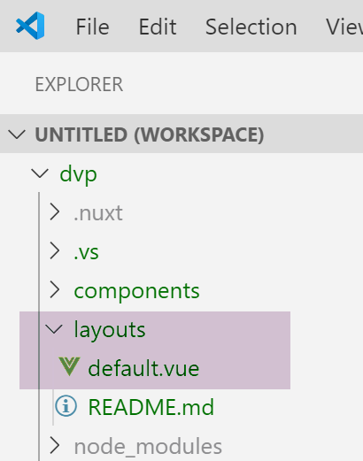
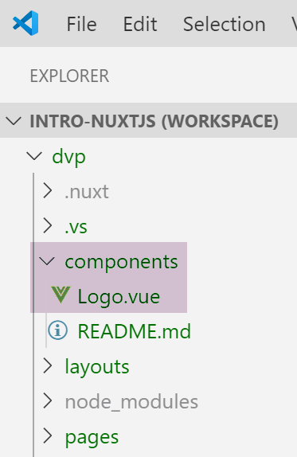
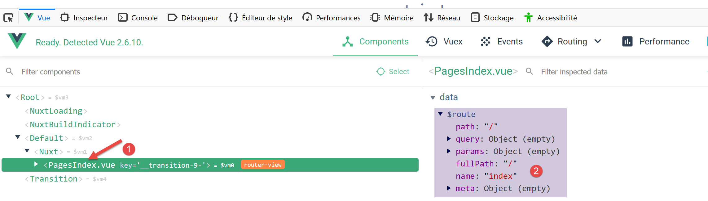
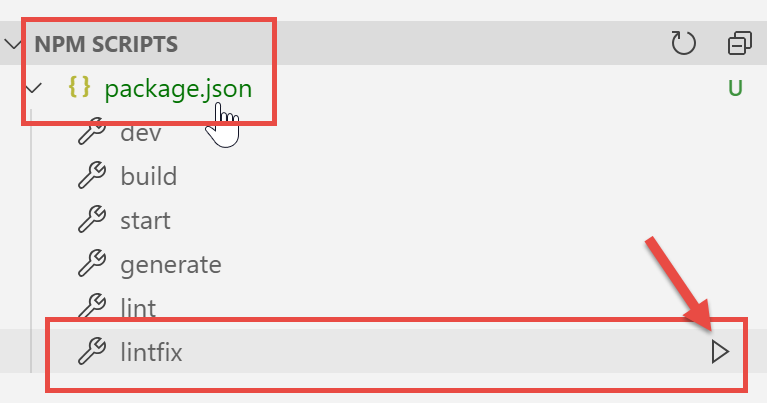
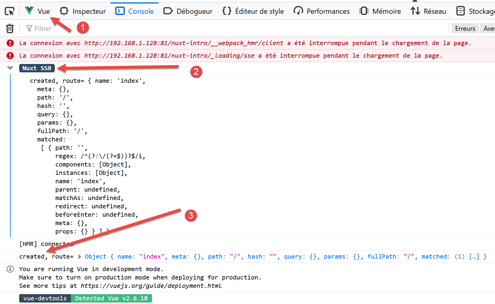

3. A First [nuxt.js] Application
3.1. Creating the Application
For our [nuxt.js] development, we will continue to use VS Code. We have created an empty folder named [dvp] where we will place our examples. Then we open this folder:

We save the workspace under the name [intro-nuxtjs] [3-5]:

We open a terminal [6-7]:

So far, we have been using the package manager Javascript [npm]. For a change, we will use the [yarn] manager here. Like [npm], it is installed with recent versions of [node.js]. To create a first [nuxt] application, we use the [yarn create nuxt-app <dossier>] [1] command. The command will request a certain amount of information about the project to be generated; once this information is obtained, it will generate [2]:

In [2], an entire file tree has been created. The file [package.json] lists the libraries Javascript downloaded to the folder [node-modules] [4]:
{
"name": "nuxt-intro",
"version": "1.0.0",
"description": "nuxt-intro",
"author": "serge-tahe",
"private": true,
"scripts": {
"dev": "nuxt",
"build": "nuxt build",
"start": "nuxt start",
"generate": "nuxt generate",
"lint": "eslint --ext .js,.vue --ignore-path .gitignore ."
},
"dependencies": {
"nuxt": "^2.0.0",
"bootstrap-vue": "^2.0.0",
"bootstrap": "^4.1.3",
"@nuxtjs/axios": "^5.3.6"
},
"devDependencies": {
"@nuxtjs/eslint-config": "^1.0.1",
"@nuxtjs/eslint-module": "^1.0.0",
"babel-eslint": "^10.0.1",
"eslint": "^6.1.0",
"eslint-plugin-nuxt": ">=0.4.2",
"eslint-config-prettier": "^4.1.0",
"eslint-plugin-prettier": "^3.0.1",
"prettier": "^1.16.4"
}
}
This file reflects the responses provided to the [create nuxt-app] command to define the created project (November 2019). The reader may have a different [package.json] file:
- they may have provided different answers to the questions;
- the [create nuxt-app] command will have evolved since this document was written: dependencies and versions will have changed;
Line 8 of the script is the command that launches the application:

- in [4], we see that the application is available at URL and [localhost:3000];
- In [5-6], we see that the application spawns a server [6] and a client (for that server) [5];
Let’s request URL [http://localhost:3000/] in a browser:

3.2. Description of the directory structure of a [nuxt] application
Let’s review the directory structure of the created application:

The role of the folders is as follows:
assets | uncompiled application resources (images, etc.); |
static | files in this folder will be available at the application root. We place files in this folder that need to be found at the application root, such as the [robots.txt] file intended for search engines; |
components | the application’s [vue] components used in [layouts] and [pages]; |
layouts | the [vue] components of the application used as layouts for the [pages] files; |
pages | the [vue] components displayed by the application’s various routes. These could be referred to as the application’s views. Pages play a special role in [nuxt]: routes are created dynamically from the directory structure found in the [pages] folder; |
middleware | scripts executed whenever a route changes. They allow you to control these routes; |
plugins | has a misleading name. It may contain plugins but also standard scripts. The scripts found in this folder are executed when the application starts; |
store | if it contains a script named [index.js], then this script defines an instance of the store for [Vuex]; |
If a folder is empty, it can be deleted from the directory tree. In the example above, the [assets, static, middleware, plugins, store] and [2] folders can be deleted.
3.3. The configuration file [nuxt.config]
The application’s execution is controlled by the following [nuxt.config.js] file:
export default {
mode: 'universal',
/*
** Headers of the page
*/
head: {
title: process.env.npm_package_name || '',
meta: [
{ charset: 'utf-8' },
{ name: 'viewport', content: 'width=device-width, initial-scale=1' },
{
hid: 'description',
name: 'description',
content: process.env.npm_package_description || ''
}
],
link: [{ rel: 'icon', type: 'image/x-icon', href: '/favicon.ico' }]
},
/*
** Customize the progress-bar color
*/
loading: { color: '#fff' },
/*
** Global CSS
*/
css: [],
/*
** Plugins to load before mounting the App
*/
plugins: [],
/*
** Nuxt.js dev-modules
*/
buildModules: [
// Doc: https://github.com/nuxt-community/eslint-module
'@nuxtjs/eslint-module'
],
/*
** Nuxt.js modules
*/
modules: [
// Doc: https://bootstrap-vue.js.org
'bootstrap-vue/nuxt',
// Doc: https://axios.nuxtjs.org/usage
'@nuxtjs/axios'
],
/*
** Axios module configuration
** See https://axios.nuxtjs.org/options
*/
axios: {},
/*
** Build configuration
*/
build: {
/*
** You can extend webpack config here
*/
extend(config, ctx) {}
}
}
- line 2: the type of generated application:
- [universal]: client/server application. When the application is first loaded, as well as every time the page is refreshed in the browser, the server is requested to deliver the page;
- [sap]: [Single Page Application]-type application: a server initially delivers the entire application. Afterward, the client operates independently, even when a page is refreshed in the browser;
- Lines 6–18: define the HTML <head> header for the application’s various pages:
- line 7: the <title> tag for the page title;
- lines 8–16: the <meta> tags;
- line 17: the <link> tags
In the generated application, the <head> tag is as follows (source code of the page displayed in the browser):
<title>nuxt-intro</title>
<meta data-n-head="ssr" charset="utf-8">
<meta data-n-head="ssr" name="viewport" content="width=device-width, initial-scale=1">
<meta data-n-head="ssr" data-hid="description" name="description" content="nuxt-intro">
<link data-n-head="ssr" rel="icon" type="image/x-icon" href="/favicon.ico">
<link rel="preload" href="/_nuxt/runtime.js" as="script">
<link rel="preload" href="/_nuxt/commons.app.js" as="script">
<link rel="preload" href="/_nuxt/vendors.app.js" as="script">
<link rel="preload" href="/_nuxt/app.js" as="script">
Now, let's modify the [nuxt.config] file as follows:
When we rerun the application, the <head> tag has changed to the following (source code of the page displayed in the browser):
<head >
<title>Introduction à [nuxt.js]</title>
<meta data-n-head="ssr" charset="utf-8">
<meta data-n-head="ssr" name="viewport" content="width=device-width, initial-scale=1">
<meta data-n-head="ssr" data-hid="description" name="description" content="ssr routing loading asyncdata middleware plugins store">
<link data-n-head="ssr" rel="icon" type="image/x-icon" href="/favicon.ico">
<link rel="preload" href="/_nuxt/runtime.js" as="script">
<link rel="preload" href="/_nuxt/commons.app.js" as="script">
<link rel="preload" href="/_nuxt/vendors.app.js" as="script">
<link rel="preload" href="/_nuxt/app.js" as="script">
Let's go back to the [nuxt.config] file:
export default {
mode: 'universal',
/*
** Headers of the page
*/
head: {
...
},
/*
** Customize the progress-bar color
*/
loading: { color: '#fff' },
/*
** Global CSS
*/
css: [],
/*
** Plugins to load before mounting the App
*/
plugins: [],
/*
** Nuxt.js dev-modules
*/
buildModules: [
// Doc: https://github.com/nuxt-community/eslint-module
'@nuxtjs/eslint-module'
],
/*
** Nuxt.js modules
*/
modules: [
// Doc: https://bootstrap-vue.js.org
'bootstrap-vue/nuxt',
// Doc: https://axios.nuxtjs.org/usage
'@nuxtjs/axios'
],
/*
** Axios module configuration
** See https://axios.nuxtjs.org/options
*/
axios: {},
/*
** Build configuration
*/
build: {
/*
** You can extend webpack config here
*/
extend(config, ctx) {}
}
}
- line 12: between each route in the [nuxt] client, a loading bar appears if the route change takes a little time. The [loading] property allows you to configure this loading bar, in this case the bar’s color;
- line 16: the global [css] files. They will be automatically included in all pages of the application;
- lines 24–27: the Javascript modules required to build the application;
- lines 31–36: the Javascript modules used by the application;
- line 41: configuration of the [axios] library when it has been selected by the user for HTTP dialogs with third-party servers;
- lines 45–50: project build configuration;
You can add other keys to the configuration file. In particular, you can configure the service port (3000 by default) and the project root (by default, the project’s root folder). This is what we’ll do now by adding the following keys:
// source code directory
srcDir: '.',
router: {
// URL root of application pages
base: '/nuxt-intro/'
},
// server
server: {
// service port - default 3000
port: 81,
// network addresses listened to - default localhost=127.0.0.1
host: '0.0.0.0'
}
- line 2: where to find the project source code. It is located here in the current directory, i.e., at the same level as the [nuxt.config.js] file. This is the default value;
- lines 8–13: configure the server (keep in mind that a [nuxt] application of the [universal] type is installed on both a server and a client browser of that server);
- line 10: the application’s pages will be served on port 81 of the server;
- line 12: by default, [localhost] (network address 127.0.0.1). A machine can have multiple network addresses if it belongs to multiple networks. The address 0.0.0.0 indicates that the web server listens on all network addresses of the machine;
- lines 3–6: configure the application router [nuxt];
- line 5: the application’s pages will be available at URL and [http://localhost:81/nuxt-intro/];
Let’s add these lines to the [nuxt.config.js] file and then run the project (npm dev script). The result is as follows:

- in [1], the machine’s address on a public network;
- in [2], the service port;
- in [3], the application root;
3.4. The [layouts] folder

The [layouts] folder is intended for layout components. By default, the component named [default.vue] is used. In this project, it is as follows:
<template>
<div>
<nuxt />
</div>
</template>
<style>
html {
font-family: 'Source Sans Pro', -apple-system, BlinkMacSystemFont, 'Segoe UI',
Roboto, 'Helvetica Neue', Arial, sans-serif;
font-size: 16px;
word-spacing: 1px;
-ms-text-size-adjust: 100%;
-webkit-text-size-adjust: 100%;
-moz-osx-font-smoothing: grayscale;
-webkit-font-smoothing: antialiased;
box-sizing: border-box;
}
*,
*:before,
*:after {
box-sizing: border-box;
margin: 0;
}
.button--green {
display: inline-block;
border-radius: 4px;
border: 1px solid #3b8070;
color: #3b8070;
text-decoration: none;
padding: 10px 30px;
}
.button--green:hover {
color: #fff;
background-color: #3b8070;
}
.button--grey {
display: inline-block;
border-radius: 4px;
border: 1px solid #35495e;
color: #35495e;
text-decoration: none;
padding: 10px 30px;
margin-left: 15px;
}
.button--grey:hover {
color: #fff;
background-color: #35495e;
}
</style>
Comments
- lines 1-5: the component's [template];
- line 3: the <nuxt /> tag designates the current routing page;
- lines 7-55: the style embedded by the layout component. Since this contains the current routing page, this style will apply to all routed pages in the application;
It is clear that the primary purpose of the [default.vue] page is to apply a style to the routed pages.
3.5. The [pages] folder

The [pages] folder contains the routed views, which are the ones the user sees. The [index.vue] page is the application’s home page. With [nuxt.js], there is no routing file. The routes are determined based on the structure of the [pages] folder. Here, the presence of a file named [index.vue] will automatically create a route named [index], with a path of [/index] reduced to [/] since this is the home page. Thus, the following route is created:
The file [index.vue] is as follows:
<template>
<div class="container">
<div>
<logo />
<h1 class="title">
nuxt-intro
</h1>
<h2 class="subtitle">
nuxt-intro
</h2>
<div class="links">
<a href="https://nuxtjs.org/" target="_blank" class="button--green">
Documentation
</a>
<a
href="https://github.com/nuxt/nuxt.js"
target="_blank"
class="button--grey"
>
GitHub
</a>
</div>
</div>
</div>
</template>
<script>
import Logo from '~/components/Logo.vue'
export default {
components: {
Logo
}
}
</script>
<style>
.container {
margin: 0 auto;
min-height: 100vh;
display: flex;
justify-content: center;
align-items: center;
text-align: center;
}
.title {
font-family: 'Quicksand', 'Source Sans Pro', -apple-system, BlinkMacSystemFont,
'Segoe UI', Roboto, 'Helvetica Neue', Arial, sans-serif;
display: block;
font-weight: 300;
font-size: 100px;
color: #35495e;
letter-spacing: 1px;
}
.subtitle {
font-weight: 300;
font-size: 42px;
color: #526488;
word-spacing: 5px;
padding-bottom: 15px;
}
.links {
padding-top: 15px;
}
</style>
The [template] for lines 1–25 displays the following view:

The image [1] is generated by line 4 of [template]. We can see that the page uses a component called [logo]. This is defined in lines 27–35 of the page’s script. In line 28, the notation [~] refers to the project root.
3.6. The [Logo] component

The [Logo.vue] component is as follows:
<template>
<div class="VueToNuxtLogo">
<div class="Triangle Triangle--two" />
<div class="Triangle Triangle--one" />
<div class="Triangle Triangle--three" />
<div class="Triangle Triangle--four" />
</div>
</template>
<style>
.VueToNuxtLogo {
display: inline-block;
animation: turn 2s linear forwards 1s;
transform: rotateX(180deg);
position: relative;
overflow: hidden;
height: 180px;
width: 245px;
}
.Triangle {
position: absolute;
top: 0;
left: 0;
width: 0;
height: 0;
}
.Triangle--one {
border-left: 105px solid transparent;
border-right: 105px solid transparent;
border-bottom: 180px solid #41b883;
}
.Triangle--two {
top: 30px;
left: 35px;
animation: goright 0.5s linear forwards 3.5s;
border-left: 87.5px solid transparent;
border-right: 87.5px solid transparent;
border-bottom: 150px solid #3b8070;
}
.Triangle--three {
top: 60px;
left: 35px;
animation: goright 0.5s linear forwards 3.5s;
border-left: 70px solid transparent;
border-right: 70px solid transparent;
border-bottom: 120px solid #35495e;
}
.Triangle--oven {
top: 120px;
left: 70px;
animation: godown 0.5s linear forwards 3s;
border-left: 35px solid transparent;
border-right: 35px solid transparent;
border-bottom: 60px solid #fff;
}
@keyframes turn {
100% {
transform: rotateX(0deg);
}
}
@keyframes godown {
100% {
top: 180px;
}
}
@keyframes goright {
100% {
left: 70px;
}
}
</style>
This component consists primarily of styles and animations to create an animated image.
3.7. View DevTools
[Vue DevTools] is the browser extension that allows you to inspect the [nuxt.js] and [vue.js] objects in the browser. We have already used it in the chapter on [vue.js]. Let’s examine what this tool finds when our application’s home page is displayed:

- in [1], the [PagesIndex] component refers to the [pages/index.vue] page;
- we see in [2] that this component has a property [$route], which is the route that led to the page [index];
As a simple exercise, let’s display this path in the console.
3.8. Modifying the Home Page
We are going to modify the file [index.vue]. In our project installation, we have installed two dependencies:
- [eslint]: which validates the syntax of Javascript files and Vue components. If the [ESLint] extension of VSCode has been installed, this syntax is checked as text is typed, and errors are immediately flagged;
- [prettier]: which formats the Javascript codes in a standard way;
These dependencies are listed in the [package.json] file:
"devDependencies": {
"@nuxtjs/eslint-config": "^1.0.1",
"@nuxtjs/eslint-module": "^1.0.0",
"babel-eslint": "^10.0.1",
"eslint": "^6.1.0",
"eslint-config-prettier": "^4.1.0",
"eslint-plugin-nuxt": ">=0.4.2",
"eslint-plugin-prettier": "^3.0.1",
"prettier": "^1.16.4"
}
I noticed (Nov 2019) that with the installation performed by the [yarn create nuxt-app] command, the [eslint, prettier] tools do not work when typing text. Errors are only reported during compilation. After some research, I found a configuration that works:

Install a folder named [.vscode] at the root of the project, containing the following [settings.json] file:
{
"eslint.validate": [
{
"language": "vue",
"autoFix": true
},
{
"language": "javascript",
"autoFix": true
}
],
"eslint.autoFixOnSave": true,
"editor.formatOnSave": false
}
- lines 2–11: indicate that when [eslint] validates the .vue and .js files, it must correct any errors it can fix;
- line 12: when a file is saved, [eslint] must fix any errors it can;
- line 13: disables the default formatting performed by VSCode during a save. [prettier] will handle this instead;
With this configuration:
- syntax or formatting errors are flagged as soon as the text is typed;
- formatting errors are automatically corrected when the file is saved;
The [prettier] library is configured by the [.prettierrc] file:

By default, this file is as follows:
{
"semi": false,
"arrowParens": "always",
"singleQuote": true
}
- line 1: no semicolon at the end of statements;
- line 2: if an arrow function has a single parameter, it is enclosed in parentheses;
- line 3: strings are enclosed in single quotes (not double quotes);
We add the following two rules:
{
"semi": false,
"arrowParens": "always",
"singleQuote": true,
"printWidth": 120,
"endOfLine": "auto"
}
- line 5: the line of code can be up to 120 characters long;
- line 6: the end-of-line marker can be either CRLF (Windows) or LF (Unix);
Finally, the file [package.json] is modified as follows:
"scripts": {
"dev": "nuxt",
"build": "nuxt build",
"start": "nuxt start",
"generate": "nuxt generate",
"lint": "eslint --ext .js,.vue --ignore-path .gitignore .",
"lintfix": "eslint --fix --ext .js,.vue --ignore-path .gitignore ."
},
- line 7: we add the command [lintfix], which is identical to the command [lint] on line 6, except that it also includes the parameter [--fix]. The command [lint] checks the syntax and format of all files in the project and reports any errors. [lintfix] will do the same thing, except that any formatting issues that can be corrected will be fixed automatically. [lintfix] is the command to use if the compilation fails due to file formatting issues;
Once this is done, we modify the file [index.vue] as follows:

<script>
/* eslint-disable no-console */
import Logo from '~/components/Logo.vue'
export default {
components: {
Logo
},
// life cycle
created() {
console.log('created, route=', this.$route)
}
}
</script>
- lines 10–12: we add the function [created], which is automatically executed when the component is created;
- line 11: the current route is displayed;
- line 2: a comment intended for [eslint]. Without this comment, [eslint] reports an error line 11: it does not want [console] instructions in the lifecycle functions. [eslint] is configurable. We will keep its default configuration and use comments such as the one on line 2 to disable a specific rule of [eslint]. We will use two types of comments:
- /* disable rule [eslint] */: disables a rule for the entire file;
- // disable rule [eslint]: disables a rule for the following line;
As you type, errors are flagged and a [Quick Fix] function is available:

Run the project:

- in [1], the [Vue] tab of the browser’s developer tools (F12);
- in [2] and [3], the route display;
Why two views instead of just one?
A [nuxt] application consists of two components, a server and a client:
- the server provides the application’s pages when the application starts and then every time a page is refreshed in the browser (F5) or the user manually enters a URL for the application;
- Each page served by the browser contains the requested page as well as the Javascript code for the entire application, which is then executed in the browser. This is the client. As long as the page is not refreshed in the browser, the application functions like a classic Vue application in [sap] mode (Single Page Application). As soon as the user manually triggers a page refresh, the page is requested from the server, and we return to the previous phase 1.
What is important to understand is that the same pages from the [pages] folder are served by both the server and the client. For this reason, the designers of [nuxt] refer to this type of page as isomorphic pages. The same [.vue] pages can be interpreted by both the client and the server. Let’s take the example of the [index] page:
<template>
<div class="container">
<div>
<logo />
<h1 class="title">
nuxt-intro
</h1>
<h2 class="subtitle">
nuxt-intro
</h2>
<div class="links">
<a href="https://nuxtjs.org/" target="_blank" class="button--green">
Documentation
</a>
<a
href="https://github.com/nuxt/nuxt.js"
target="_blank"
class="button--grey"
>
GitHub
</a>
</div>
</div>
</div>
</template>
<script>
/* eslint-disable no-console */
import Logo from '~/components/Logo.vue'
export default {
components: {
Logo
},
// life cycle
created() {
console.log('created, route=', this.$route)
}
}
</script>
Since this is the home page, it is served by the server when the application starts. The page on the server also has a lifecycle, the same as that of a standard [Vue] page except for the [beforeMount, monted] functions, which do not exist on the server side. The [created] function is executed, which explains the first log entry. This also means that the server is capable of executing Javascript scripts. Here and in general, this server is a [node.js] server. Once the page is created on the server, it arrives at the browser where it undergoes the lifecycle again. The [created] function is executed a second time, which produces the second log.
The architecture of a [nuxt] application could be as follows:

- [1]: the browser that hosts the [nuxt] application once it has been loaded into the browser. This is what is referred to as the [nuxt] client;
- [3]: the server that initially hosts the [nuxt] application. This is loaded into the [1] browser upon application startup and every time the user refreshes the current browser page or manually enters a URL from the application. This is where the difference in operation lies compared to a classic Vue application. With a classic Vue application, once loaded into the browser, the server is never called upon again. Another important difference that we haven’t seen yet is that the server for a Vue application is a static server, incapable of interpreting [.vue] pages, whereas that of a Nuxt application of the [universal] type is a Javascript server. Before sending a page to the browser, the server can execute scripts and, for example, fetch data from the [2] server;
- [2]: is the server that provides data either to the client [nuxt] [1], or to the server [nuxt] [3];
In the diagram above, we can distinguish three client/server subsystems:
- [1, 3]: hosts the [nuxt] application. [3] provides it when the application starts up with the home page and whenever the user manually requests a page. [1] hosts the[nuxt] application received from [3], which also runs in [SAP] mode as long as pages are not manually requested from [3];
- [1, 2]: in [SAP] mode, the [nuxt] client retrieves external data from one or more servers;
- [3, 2]: When generating the page requested by the user, the [3] server may also retrieve external data from one or more servers;
It is therefore the [3] server that distinguishes a [nuxt] application from a [vue] application. This server is called upon every time the user manually requests a page. It processes the same [.vue] pages as the [vue] and [1] clients. It is a Javascript server capable of executing the scripts present on the page. This can, for example, modify how the home page is generated using external data: whereas a [vue] application necessarily obtains this data from the client [1], here it can be obtained by the server [3] before the page is sent to the client. The home page thus becomes meaningful and can help improve the application’s SEO.
Note: In development mode, the three entities [1, 2, 3] are often on the same machine. This will be the case here for all our examples.
3.9. Moving the application source code to a separate folder
Next, we will create various [nuxt] applications in the same [dvp] folder. In fact, the [node_modules] dependencies folder generated for each [nuxt] project can be several hundred megabytes in size. We will create various [nuxt-00, nuxt-01, ...] folders within the [dvp] folder to contain the source code for the examples to be tested. Then we will use the configuration file [nuxt-config.js] to specify the location of the source code for the [dvp] project, which will remain the only [nuxt] project in this tutorial.
We move the source code of the application initially generated by the [yarn create nuxt-app] command into a [nuxt-00] folder:

- In [2], we moved the [components, layouts, pages] folders into a [nuxt-00] folder;
- In [3], we need to modify the file [nuxt.config.js];
We modify the [nuxt.config.js] file as follows:
export default {
mode: 'universal',
/*
** Headers of the page
*/
...
/*
** Build configuration
*/
build: {
/*
** You can extend webpack config here
*/
extend(config, ctx) {}
},
// source code directory
srcDir: 'nuxt-00',
// router
router: {
// application URL root
base: '/nuxt-00/'
},
// server
server: {
// service port, default 3000
port: 81,
// network addresses listened to, default localhost: 127.0.0.1
// 0.0.0.0 = all the machine's network addresses
host: '0.0.0.0'
}
}
The file is modified in two places:
- line 17: specifies that the source code for the [dvp] project is located in the [nuxt-00] folder;
- line 21: it is specified that the root of the URL application is now [/nuxt-00/]. This change was not mandatory. We could omit this property, in which case the root of URL would be [/]. Here, this will help us remember that the source code being executed is from the [nuxt-00] folder;
With that done, the [dvp] project is executed as before:

3.10. Deployment of the [nuxt-00] application
We will run the [nuxt-00] application in an environment other than the integrated environment of VSCode.
First, we compile the application:

- as [3], the result of the client compilation. This will be executed by the browser;
- as [4], the result of the server compilation. This will be executed by the [node.js] server;
The compilation result is placed in the [.nuxt] folder:

We copy the [.nuxt, node_modules] folder and the [package.json, nuxt.config.js] files to a separate folder:

The [package.json] file is simplified as follows:
{
"scripts": {
"start": "nuxt start"
}
}
- We keep only the [start] script, which allows us to run the compiled version from the project;
The [nuxt.config.js] file is simplified as follows:
export default {
// router
router: {
// application URL root
base: '/nuxt-00/'
},
// server
server: {
// service port, default 3000
port: 81,
// network addresses listened to, default localhost: 127.0.0.1
// 0.0.0.0 = all the machine's network addresses
host: '0.0.0.0'
}
}
- line 5: sets the base URL of the compiled application;
- lines 8–14: define the service port and the network addresses being listened to;
Once this is done, open a Laragon terminal and navigate to the folder containing the compiled version of the project. You can open any type of terminal, but the [npm] executable must be in the terminal’s PATH directory. This is the case for the Laragon terminal.
Once this is done, type the command [npm run start]:

In [3], you can see that a server has been launched and is listening on port URL. Now let’s request this URL using a browser [4]. We see the same result as before. On the server side, logs have been written. This is the log placed in the method that was executed by the server.

On the [6] browser side, we also find the log for the [created] method of the [index.vue] page, but this time executed by the client.
3.11. Setting up a secure server
Above, the application’s URL is [http://192.168.1.128/nuxt-00/]. We would like it to be [https://192.168.1.128/nuxt-00/]. We therefore need to build a secure server. We’ll show you how to do this.
Note: This method was taken from the article [https://stackoverflow.com/questions/56966137/how-to-run-nuxt-npm-run-dev-with-https-in-localhost].
First, we create a private key and a public key using [openssl]. [openssl] is normally installed at the same time as the Laragon server. As a result, this command is available in any Laragon terminal. So let’s open a Laragon terminal and navigate to the folder of the deployed application:


- In [2], type the command [openssl genrsa 2048 > server.key];
- in [3], a file named [server.key] is created;
- In [4], type the command [openssl req -new -x509 -nodes -sha256 -days 365 -key server.key -out server.crt];
- in [5], a file named [server.crt] is created;
These two files constitute a self-signed certificate. Most browsers only accept them after approval by the user who requested the page.
The [server.key, server.crt] files must now be used by the web application. To do this, the [nuxt.config.js] file must be modified as follows:
import path from 'path'
import fs from 'fs'
export default {
// router
router: {
// application URL root
base: '/nuxt-00/'
},
// server
server: {
// service port, default 3000
port: 81,
// network addresses listened to, default localhost: 127.0.0.1
// 0.0.0.0 = all the machine's network addresses
host: '0.0.0.0',
// self-signed certificate
https: {
key: fs.readFileSync(path.resolve(__dirname, 'server.key')),
cert: fs.readFileSync(path.resolve(__dirname, 'server.crt'))
}
}
}
Lines 18–21 implement the [https] protocol.
Now let’s run the application again:

3.12. End of the first example
The first example is now complete. It has taught us many concepts of [nuxt]. We will now develop other examples that we will place in [nuxt-01, nuxt-02, ...] folders. Since these examples will use a different [nuxt.config.js] file, we will save the [nuxt.config.js] file used to run them in each of these folders: